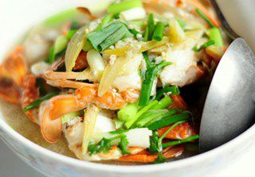

Cùng bắt tay làm thử thôi nào!
Bạn cần chuẩn bị một số nguyên liệu như sau:
- 4 khứa cá lóc
- Cà chua: 2 trái
- 1 vắt me
- Đậu bắp: 5 trái
- ½ trái thơm
- Bạc hà: 1 cây
- Giá, ngò om, hành lá.
- Gia vị: hành khô, ớt, hạt nêm, muối, nước mắm, đường.
Cách nấu canh chua cá lóc ngon:
- Cá rửa sạch, ướp với gia vị muối, đường, nước mắm, ớt.
- Cà chua thái múi cau. Thơm, bạc hà, đậu bắp cắt miếng nhỏ vừa ăn.
- Phi thơm hành, cho cà chua vào xào sơ rồi cho cá vào đảo đều.
- Cho nước lạnh vào ngập cá, đun sôi.
- Tiếp theo cho thơm, bạc hà vào đun sôi lần nữa.
- Me cho ra chén, múc 1 ít nước canh cho vào khuấy tan rồi lọc lấy nước cốt me.
- Cho nước cốt me, đậu bắp, giá vào nồi canh cá, nấu sôi, nêm nếm chua chua ngọt ngọt vừa ăn, rắc ngò om hành lá lên trên rồi tắt bếp.
Đối với người miền tây thì bất kỳ cô gái nông thôn nào cũng có thể nấu được một nồi canh chua cá lóc thơm ngon vì đây đã trở thành một món ăn dân dã từ xưa đến nay của vùng sông nước. Hy vọng sẽ giúp bạn có thêm kiến thức về một món ăn nữa của người dân miền tây nhé. Chúc bạn thành công !!!